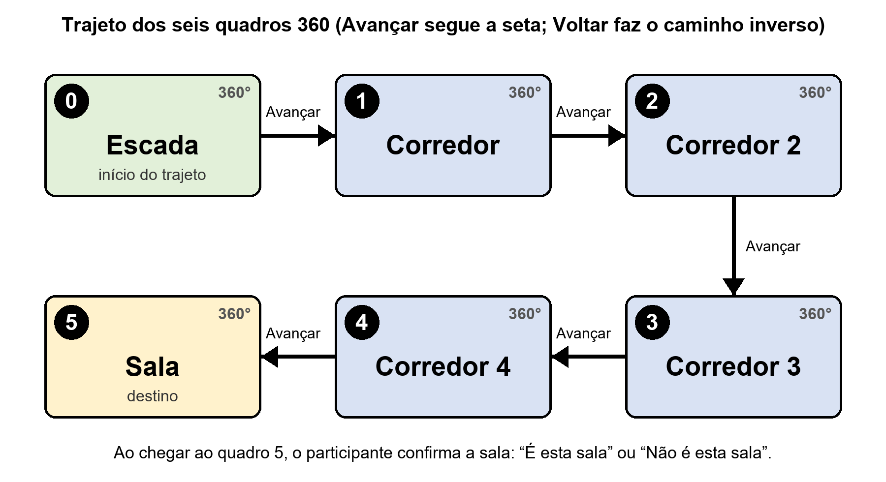

Visão geral e protótipo de alta fidelidade
Autor: Matheus do Vale Lameira, matrícula 202070064 · Validador: Matheus do Vale Lameira
Funcionalidade: Street View · Conteúdo desta página: visão geral, escopo e recursos do protótipo de alta fidelidade
Documento completo em PDF: Baixar Grupo2MatheusdoValeEtapa7RelatoAvaliacaoAltaFidelidade.pdf
Outros artefatos do autor: Planejamento da avaliação do protótipo de alta fidelidade · Relato dos resultados da avaliação do protótipo de alta fidelidade · Anexos A a C: termo, questionário, instruções e cartão de satisfação · Anexos D a F: formulários de observação, roteiro e ficha de calibração · Anexo G: guia de aplicação da sessão · Aval do professor e complexidade do Street View · Legenda dos códigos
1. Funcionalidade e escopo
O Street View é a funcionalidade do NoFluxo UnB que ajuda o aluno a achar e identificar a sala da aula: ele informa a sala (ou a matéria), percorre em imagens 360° o caminho até a porta e confirma, pela placa, que é a sala certa. Serve sobretudo a quem chegou há pouco ao campus e ainda não sabe onde ficam as salas.
A HTA do Street View, da Entrega 5, tem 1 objetivo geral (0, achar e identificar a sala da aula), 3 subobjetivos (1, localizar a sala procurada; 2, reconhecer o caminho até a sala; 3, identificar a sala), 7 operações (1.1 a 3.2) e 4 planos, todos em sequência: 0 (1>2>3), 1 (1.1>1.2>1.3), 2 (2.1>2.2) e 3 (3.1>3.2). Nos planos 0 e 3, se a sala identificada não for a procurada, o aluno volta ao objetivo 1. O storyboard da Entrega 5 deu origem ao protótipo de papel da Entrega 6, com quatro telas (veja do storyboard ao protótipo de papel). O protótipo de alta fidelidade realiza essas telas, como mostra a Tabela 1.
| Tela do papel | HTA | No protótipo de alta fidelidade |
|---|---|---|
| H1: tela inicial do NoFluxo | 1.1, abrir o Street View | Não há tela inicial separada: ao abrir o endereço, o cabeçalho "NoFluxo, Street View do campus" e a busca já aparecem. |
| V1: busca da sala | 1.2, informar a sala procurada | Tela de busca com as abas Sala e Matéria, campus, bloco, sala, horário (opcional) e o botão Buscar. |
| V2: localização e trajeto | 1.3, 2.1 e 2.2 | Quadros 0 a 4 em 360°, com os botões Avançar e Voltar, o destino no topo ("Rumo à sala S7") e uma barra de progresso de seis passos. Não há planta do bloco, como havia no papel. |
| V3: entrada e confirmação da sala | 3.1 e 3.2 | Quadro 5, com a porta marcada "Sala S7" e os botões "É esta sala" e "Não é esta sala". O segundo volta à busca. |
A tarefa avaliada é a T1: “Você está na primeira semana de aula e precisa chegar à sua primeira aula. Use o Street View para achar a sala e ter certeza de que é a sala certa.” Ela percorre as quatro telas e as sete operações da HTA, e tem no máximo 10 minutos. O papel usava a sala BT-120; o protótipo de alta fidelidade usa a sala S7, do prédio que foi fotografado.
Os seis quadros 360
O trajeto tem seis quadros em 360° percorridos em sequência, da escada à sala (Figura 1 e Tabela 2). Os quadros 0 a 4 realizam a V2 (HTA 2.1 e 2.2) e o quadro 5 realiza a V3 (HTA 3.1 e 3.2).

Fonte: elaborada pelo autor.
| Quadro | Nome | Papel no trajeto | HTA |
|---|---|---|---|
| 0 | Escada | Ponto de partida, com o rótulo "ESCADA" e uma seta no chão | 2.1, 2.2 |
| 1 | Corredor | Primeiro trecho do corredor | 2.1, 2.2 |
| 2 | Corredor 2 | Segundo trecho | 2.1, 2.2 |
| 3 | Corredor 3 | Terceiro trecho | 2.1, 2.2 |
| 4 | Corredor 4 | Último trecho antes da sala, com uma seta marcada "S7" | 2.1, 2.2 |
| 5 | Sala (no código do protótipo, "corredor 5") | Destino: porta marcada "Sala S7", rótulo "IHC" e os botões de confirmação | 3.1, 3.2 |
Os seis quadros foram conferidos antes das sessões: abrem, giram 360°, avançam e voltam.
2. Protótipo
Abrir o protótipo de alta fidelidade do Street View, pensado para o celular (uma coluna, botões grandes). O código-fonte fica em frontend/prototipo-matheus/: index.html é a busca, rota.html é o trajeto e a confirmação, hotspots.js desenha as setas e os rótulos sobre o 360°, dados/ traz as salas e os quadros em JSON e panos/ traz as imagens.
2.1 Como rodar
O protótipo é estático: HTML, CSS e JavaScript, com o visualizador Pannellum incluído na pasta, sem servidor próprio, banco de dados nem instalação. Há duas formas de abrir:
- Pelo GitHub Pages: abra o link do protótipo no navegador do celular ou do computador.
- Na própria máquina: clone o repositório e, dentro de
frontend/, rodepython -m http.server; depois abrahttp://localhost:8000/prototipo-matheus/. Abrir oindex.htmlcom dois cliques não costuma funcionar, porque o navegador bloqueia a leitura dos arquivos JSON fora de um servidor.
Para ver como no celular, no computador, abra as ferramentas do desenvolvedor (tecla F12) e ative o modo de dispositivo móvel. Sem internet o protótipo também abre, pois não usa fontes nem bibliotecas externas.
2.2 Como usar para a tarefa T1
- Ao abrir o endereço aparece a busca "Encontre sua sala" (HTA 1.1). O campus (FGA, UnB Gama) e o bloco (UED) já vêm escolhidos, por serem os únicos cadastrados.
- Digite a sala no campo "Sala" (por exemplo, S7) e toque em Buscar (HTA 1.2). O sistema aceita variações como "s7", "S 7" ou "S-7". Se faltar um campo, ou se a sala não existir no bloco, aparece uma mensagem em vermelho. A aba "Matéria" faz a mesma busca escolhendo a matéria (Interação Humano-Computador, IHC) em vez da sala. O campo "Horário" é opcional.
- Abre o trajeto em tela cheia, no quadro 0 (escada). No topo estão o destino ("Rumo à sala S7"), o passo ("Passo 1 de 6") e a barra de progresso (HTA 1.3). Arraste para girar a vista 360°; a seta branca no chão marca o caminho.
- Toque em Avançar, ou na seta do chão, para ir ao quadro seguinte, e em Voltar para retornar (no quadro 0, Voltar vira "Nova busca"). Em cada quadro, observe o entorno para se situar (HTA 2.1 e 2.2).
- No quadro 5, confira a placa na porta marcada (HTA 3.1) e toque em "É esta sala" (HTA 3.2): aparece "Você encontrou a sala!" e o botão "Nova busca". Se tocar em "Não é esta sala", volta à busca com o aviso de que não era a sala indicada, e a tarefa recomeça no objetivo 1.
2.3 Dados e limites
Os dados são fixos, em arquivos JSON, e não vêm do NoFluxo UnB real. O protótipo não grava nem envia nada: cada abertura começa do zero. A versão publicada no site é de 15/11/2026, depois das sessões de 12 e 13/11. Os limites são estes:
- Uma só sala e um só trajeto: há uma sala cadastrada (S7, 2º andar, bloco UED, FGA, UnB Gama), uma matéria (IHC) e um caminho fixo de seis quadros, na ordem escada, corredor, corredor 2, 3, 4 e sala. Os outros blocos do campus não existem nele. O horário não filtra a busca: só reaparece na tela final ("aula às ...").
- Sem planta nem mapa: a localização da sala (HTA 1.3) é dada só pelo texto do topo e pelo passo "n de 6".
- Seta do chão e botão Avançar: o botão percorre os seis quadros um a um, mas a seta do chão, na escada, leva ao corredor 2 e, no corredor, ao corredor 3, pulando um quadro.
- Sem volta no quadro 5: ali os botões Avançar e Voltar dão lugar a "É esta sala" e "Não é esta sala", e não há seta para o corredor.
- Origem dos quadros: os quadros foram criados com uma ferramenta própria que cola várias fotos, tiradas em ângulos diferentes, num único ponto de 360°, a partir de 24 a 30 fotos por ponto (240 fotos no prédio do protótipo). Cada quadro tem uma prévia e imagens em vários níveis de resolução.
- Aparelho: o protótipo é feito para o celular, mas o formulário D.2 registra Computador para P01 e não registra o aparelho de P02. As sessões tiveram gravação de tela e de áudio.
3. Recursos exercitados nas sessões
Os participantes P01 e P02 exploraram os recursos abaixo, segundo os formulários de observação e as legendas das gravações (os resultados estão no relato dos resultados):
- busca da sala por campus, bloco e sala: os dois acharam a sala pela busca; P02 achou fácil e disse que o exemplo no campo já mostrava como é a sinalização da sala;
- vista 360° e entorno: P02 gostou de ver o entorno e de ter certeza de qual escada estava acessando; P01 achou o caminho "um bom facilitador";
- avanço pelo corredor: P02 disse que avançar dá uma noção de quanto vai andar até a sala; P01 não soube para onde ir nos corredores, que achou iguais;
- botão Voltar e setas interativas: cada um dos dois usou Voltar em dois quadros, e o avaliador lembrou ao P02 que as setas eram interativas e que dava para voltar;
- reconhecimento da sala: o ponto que mostrava a sala e a matéria ajudou P01; P02 se guiou pelo número na porta; P01 leu S5 antes de corrigir para S6 e S7;
- cores e tamanho das letras: os dois acharam bons e nada foi difícil de ler; P01 sugeriu as cores da UnB.
Histórico de versão
| Versão | Data | Descrição | Autor(es) | Revisor(es) | Declaração de ferramenta de IA |
|---|---|---|---|---|---|
| 0.1 | 15/11/2026 | Publicação de Visão geral e protótipo de alta fidelidade, a partir do documento Grupo2MatheusdoValeEtapa7RelatoAvaliacaoAltaFidelidade, integralmente e sem alterar o conteúdo, com hiperlinks para os artefatos desta e das entregas anteriores | Matheus do Vale Lameira | Matheus do Vale Lameira | Claude (Anthropic): estruturação da página no padrão da Entrega 6 e revisão da estrutura; o conteúdo é do autor |
| 0.2 | 16/11/2026 | Reorganização da página no modelo de relato: funcionalidade e escopo, protótipo (como abrir e usar para a T1, dados e limites) e recursos exercitados nas sessões; a folha de bolso e o modo de uso do documento saem desta página | Matheus do Vale Lameira | Matheus do Vale Lameira | Claude (Anthropic): estrutura da página; o conteúdo é do autor |